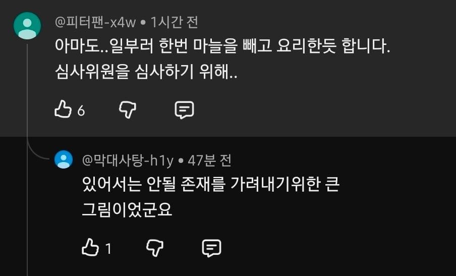
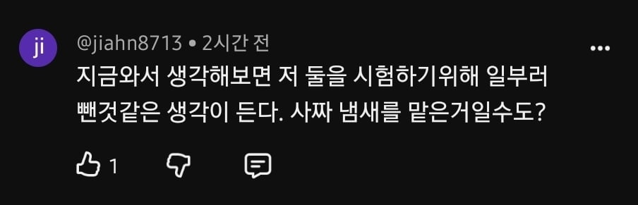

그래도 쉐프인데 마늘을 실수로 빼먹고 봉골레 파스타를 만든다는게 말이안된다
vs
최현석도 사람인데 긴장하면 봉골레 파스타에 마늘 빼먹을수도 있다


그래도 쉐프인데 마늘을 실수로 빼먹고 봉골레 파스타를 만든다는게 말이안된다
vs
최현석도 사람인데 긴장하면 봉골레 파스타에 마늘 빼먹을수도 있다
(뭔가 의도가 있겠지)
븅신같은 글이네
정보) 백종원 글의 8할은 같은 글쓴이다
누가 경연에서 심사위원 심사한단 븅신같은 이유로 지 커리어 걸고 실수를 함?
'그 사람' 이 마늘 뺀거 지적 안해서 리얼 최현석 셰프가 테스트 했었겠네 ㅋㅋㅋ 뭔 긴장이야 녹본인데 전부
나이들면 깜빡깜빡 해
사실 흑백요리사도 백종원이 만든거임
근데 어느정도 ㄹㅇ이긴함ㅋㅋ 제작진이 첨부터 백종원 생각하고 만든 프로랬음
진짜 내가 올해 본 가장 병신 같은 게시글이네
마늘없이도 조금 느끼하다는 정도로 평가 나온게 신기함 사실상 텅텅 빈 맛이 나야 하는데
극한의 봉골레 머신이 되어버린
대본 그대로 읽는 안정적인 성능의 빽선생 사스가 스고이!
조개 육수로만 만들었다. 아무 간도 안했다.
이러면 그냥 받아들이지 않나 ㅋㅋㅋ
아 이런맛이구나.